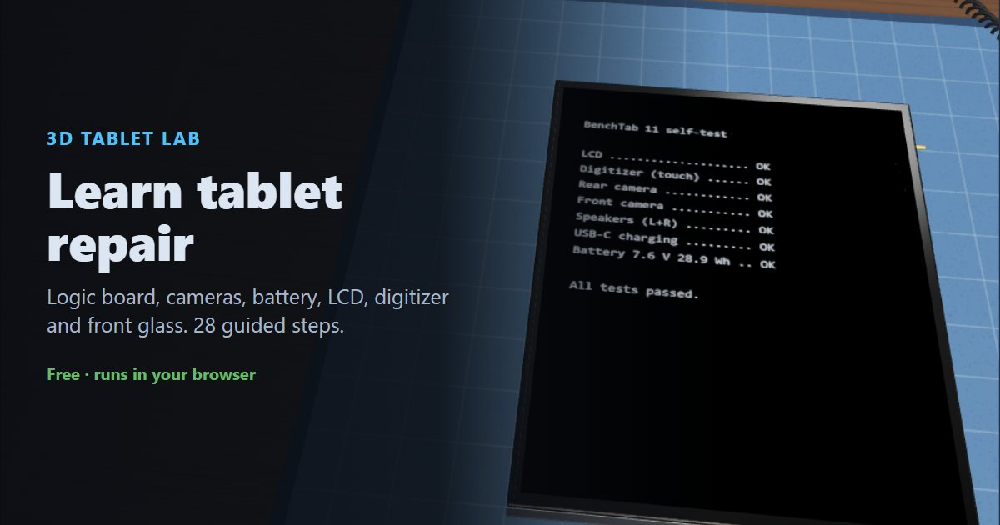

How to repair a tablet: tablet assembly, step by step
This guide walks through putting a tablet back together from an empty rear case: the logic board and cameras, the charging port and speakers, the two-cell battery, the LCD and front glass, then powering on and testing. Every step matches the free 3D tablet repair simulator, where you can practise in your browser before you open a real tablet. Tablets vary a lot between models, so always follow your model's repair manual.
▶ Practise this in the free 3D tablet repair simulator
What you need
- Precision screwdriver set (Phillips #000 and Tri-point bits)
- Antistatic wrist strap and mat
- Plastic spudger and opening picks (never metal on connectors)
- Suction cup and a heat source to soften the front-glass adhesive
- Magnetic screw mat to keep screws in order
- Replacement battery adhesive strips and front-glass adhesive
Contents
Part 1: Prepare the workspace
Put on the ESD vest
Put on an ESD vest or smock. It keeps static from your clothing away from the components.
An ESD smock or vest is standard practice in electronics repair labs.
Put on the antistatic wrist strap
Put on an antistatic wrist strap and clip it to a ground point, such as the GND snap on the mat. A tablet's logic board and cameras are easily damaged by static.
Lay the rear case on the mat
Lay the tablet rear case on the antistatic mat, back down, so the empty inside faces you.
Make sure there is no power
Check that the tablet is switched off, unplugged, and that the battery is not connected.
A lithium-ion battery can short-circuit and damage the board, or even catch fire, if it's connected while you work. When you take a tablet apart, disconnect the battery first. When you put one together, connect it last.
Part 2: Install the logic board & cameras
Place the logic board
Lower the logic board into the top of the case so its screw holes line up with the posts in the case.
Secure the logic board
Fasten the logic board with its screws.
Tablet screws are tiny and come in different lengths. Keep them on a screw mat in the pattern they came out, so each one goes back in its own hole.
Fit the rear camera module
Seat the rear camera in its bay so the lenses sit over the camera window in the back.
Connect the rear camera
Press the camera flex onto the connector labelled CAM. Line the connector up and press it straight down with a fingertip or a plastic spudger until it clicks. Never use metal tools on these connectors.
Fit the front camera
Seat the front camera in its slot at the top edge.
Connect the front camera
Press the front camera flex onto the connector labelled F-CAM.
Part 3: Install the charging port & speakers
Fit the charging port
Fit the USB-C charging port into the bottom edge so the port lines up with the opening in the case.
Secure the charging port
Fasten the charging port with its two screws.
Connect the charging port flex
The port's flex runs up the side to the logic board. Press it onto the connector labelled PORT.
Fit the speakers
Fit the speaker pair into the two bottom corners of the case.
Part 4: Install the battery
Apply the battery adhesive
Stick new adhesive pull-tab strips into the battery bay. The tabs let you pull the battery out later without prying it.
Do this before the battery goes in. Once the battery is down you can't add adhesive without prying it back out.
Place the battery
Lay the two-cell battery onto the adhesive and press it down gently. Don't connect it yet.
Never bend, puncture or pry a lithium-ion battery with metal tools, and never install a swollen one.
Part 5: Install the LCD & front glass
Place the LCD panel
Lay the LCD panel into the case over the battery. Hold it by its edges and keep fingerprints off the face.
Connect the LCD
Press the LCD flex onto the connector labelled LCD.
Secure the LCD
Fasten the LCD with its four corner screws.
Apply the front-glass adhesive
Lay new adhesive strips around the rim of the case. They hold the front glass on.
Lay out the front glass
Place the front glass (digitizer) beside the tablet, face down, along its right-hand edge, like an open book.
Connect the digitizer
Press the digitizer flex onto the connector labelled DIGI. The digitizer is the touch layer.
Connect the battery (last)
With everything else connected, press the battery connector onto BATT.
Connect the battery last. When servicing, it's the first thing you disconnect.
Fit the connector shield
Lay the metal shield plate over the connectors. It stops them working loose.
Screw down the shield
Fasten the shield with the short (1.2 mm) screw. Compare screw lengths before every screw goes in.
A long (3.6 mm) screw in a shield hole punches through the layers of the logic board underneath. This is called long screw damage, and it can kill the tablet permanently.
Close the front glass
Fold the front glass over onto the case, then press around the edges so the adhesive bonds.
Part 6: Power on & test
Power on
Press the top button to switch the tablet on.
Test the tablet
Check the touch screen, both cameras, the speakers and charging before you hand the tablet back.
Common mistakes to avoid
- Working with the battery connected
- A connected battery can short and damage the logic board, or start a fire. Disconnect it first when you open a tablet, and connect it last when you close one.
- Using a long screw in a short hole
- A 3.6 mm screw where a 1.2 mm one belongs punches through the logic board ("long screw damage"). Keep screws in order on a screw mat.
- Confusing the LCD and the digitizer
- On many tablets the LCD (the picture) and the digitizer (the touch glass) are separate parts with separate connectors. Plug the LCD flex into LCD and the digitizer flex into DIGI.
- Prying connectors with metal tools
- A metal tool can short pins or tear a connector off the board. Use a plastic spudger or a fingertip, and press straight down without rocking.
- Touching the face of the LCD
- Fingerprints and dust under the front glass are visible forever. Hold the LCD by its edges and keep it covered until the glass goes on.
- Reusing the old front-glass adhesive
- Old adhesive won't hold the glass flat, so it lifts at the edges. Lay new strips every time.
- Installing a swollen battery
- A swollen lithium-ion battery is a fire risk. Never install one, and recycle it properly.
- Forgetting the connector shield
- Without the shield, the press-fit connectors can work loose when the tablet is dropped or flexed.
Frequently asked questions
What is the difference between the LCD and the digitizer?
The LCD shows the picture. The digitizer is the touch-sensitive front glass. On many tablets they are separate parts with separate connectors, so a cracked glass can be replaced without buying a new LCD.
Can you replace just the glass on a tablet?
On many tablets, yes: if the touch glass (digitizer) is separate from the LCD, you can replace only the glass. If they are fused together as one display assembly, you have to replace the whole assembly.
Why do you disconnect the battery first when repairing a tablet?
A connected battery can short-circuit components while you plug in or unplug other connectors. Disconnect it first when you open a tablet, and connect it last when you close one.
What tools do you need to repair a tablet?
A precision screwdriver set, plastic spudgers and opening picks, a suction cup, a heat source for the adhesive, an antistatic wrist strap and a screw mat. You also need new adhesive strips.
Can I practise tablet repair without a real tablet?
Yes. The free Tablet Lab 3D simulator runs in your browser and walks you through 28 steps, catching mistakes like the wrong screw length or a flex on the wrong connector.
Reading is one thing. Doing it without breaking anything is another.
▶ Practise all 28 steps in 3DNext: How to repair a phone, step by step · How to build a PC · How to assemble a laptop